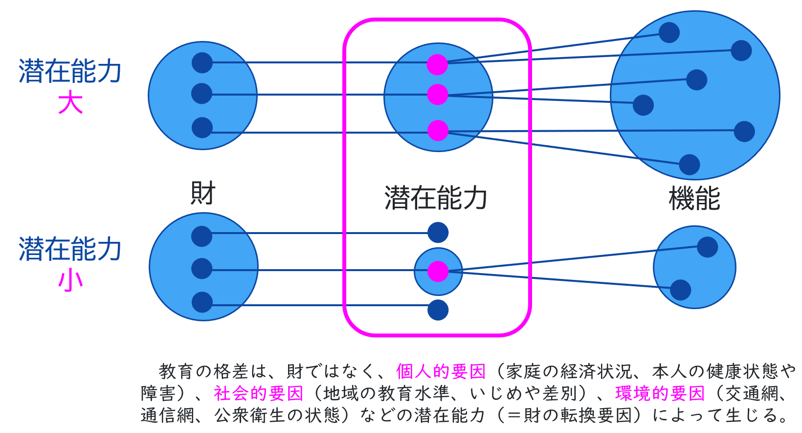

1はじめに：目的の確認
いよいよ「構想力」を本格的に発揮する時間です。まずは、前回の学びを確認しましょう。
私たちは、お金のためだけでなく、より豊かな「よろこび」のために働くことを確認し、AI時代における「人間ならではの価値」を定義しました。
- 共感する力、創造する力、倫理的に判断する力 etc...
本時のゴール
定義した「価値」を基準に、
未来の職業とより良い社会を具体的に構想する！
これから、Googleスライドを使って一人一人の構想をまとめていきます。
2展開１：未来ジョブの構想
誰かの「潜在能力（Capability）」を拡大するための、全く新しい職業を自由に構想してみましょう。
中心的な問い
誰の、どんな「潜在能力」を拡大する？
ケイパビリティ・アプローチの確認
経済学者のアマルティア・センは、「人が実際に何ができていて（＝機能）、どんな選択肢の中から自由に選べるか（＝潜在能力）が、本当の豊かさを考える上で大事だ！」と考えました。これが「ケイパビリティ・アプローチ」の基本的な考え方です。
財（モノやお金）があっても、それを使える環境や能力（潜在能力）がなければ、実際に豊かな活動（機能）にはつながらない。
キーワード整理
- 機能（Functioning）:
- 実際にできていること・なっている状態 （例：健康である、学校に通っている）
- 潜在能力（Capability）:
- できるようになる可能性・選べる選択肢の幅広さ （例：治療を受けられる、複数の進学先を選べる）
- ターゲット（その人たち）は、今、何に困っているだろう？
- どんな可能性が奪われている（選択肢が狭まっている）だろう？
- アイデア出しに困ったら、AIをパートナーとして壁打ちに使ってみよう！
構想した新しい職業の名前と、その仕事内容をスライドにまとめてください。
3展開２：社会像の構想
あなたの構想した職業が生まれた結果、社会全体がどのように良くなるのか、という大きな視点で構想を深めていきましょう。
ミッション
職業という「点」のアイデアを、
より良い社会像という「面」の構想に結びつけよう！
以下の視点で、構想した職業が実現した未来の社会を具体的に描写してください。
- その職業は、社会にどんな影響を与えますか？
- 人々の生活や価値観はどのように変わりますか？
- その結果、どんな「より良い社会」が実現するでしょうか？
4まとめ：ギャラリーウォークと振り返り
各自の構想を相互に観賞しましょう。最後に、この単元全体の学びを振り返ります。
活動の流れ
-
デジタル・ギャラリーウォーク:
完成したGoogleスライドを全体で観賞します。クラスメイトの素晴らしい構想を見て回りましょう。
（余裕があれば、Googleスライドのコメント機能を使い、クラスメイトのアイデアに賞賛を書き込みましょう）
本単元の総括
皆さんは、社会を「考察」するだけでなく、自らの価値観に基づいて未来を「構想」する力を身につけました。
この構想力こそが、AI時代を主体的に生き抜く上で不可欠な力です。
「ケイパビリティ・アプローチ」という視点は、社会を考察・構想する強力なツールです。是非マスターして、AI時代を力強く切り拓いてください。
最後に、振り返りアンケートに回答してください。